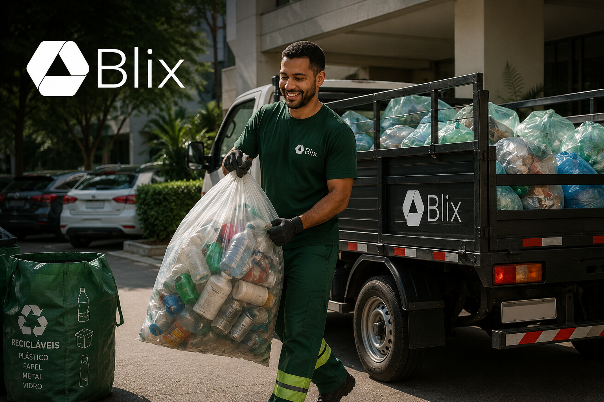

Senior Product Manager
Produto que
gera impacto real.
Senior Product Manager com experiência end-to-end em estratégia, discovery, delivery e evolução de produtos digitais B2B, SaaS e corporativos.
+15 anos de experiênciaProduto • UX • Tecnologia
Inovação • IA
Inovação • IA
design e inovação
através de discoveries
via análise de NPS
impactados
criados do zero
Como eu gero valor
Competências que conectam
estratégia, tecnologia e pessoas.
Estratégia e Discovery
- Product Strategy
- Product Discovery
- Product Vision
- Roadmaps
- Priorização
Delivery e Operação
- Backlog e priorização
- Requisitos e regras de negócio
- Product Delivery
- KPIs e OKRs
- Gestão de riscos e dependências
IA, Automação e Tecnologia
- Produtos AI-first
- IA generativa e agentes
- Automação de processos
- Integrações entre sistemas
- Prototipação assistida por IA
Experiência e Negócios
- UX Research
- Service Design e Blueprint
- JTBD
- Stakeholder Management
- Venture Building
Cases em destaque
Projetos com impacto real.
Michelin Connected Fleet
Transformação da jornada do cliente e do backoffice por meio de Product Discovery, Service Blueprint e definição de iniciativas estratégicas de automação e Inteligência Artificial.
Binatural
Estratégia e concepção de um Super App corporativo integrando clientes, fornecedores, motoristas e colaboradores em uma única plataforma digital.
Mercado Eletrônico
Redesenho da experiência de resposta de cotações em uma plataforma SaaS B2B, utilizando Product Discovery, pesquisas com usuários e IA para aumentar a eficiência operacional.
Apepê
Evolução estratégica da plataforma digital, conduzindo Product Discovery, pesquisas com usuários e definição de roadmap que impulsionaram o crescimento do produto e da base de usuários.

Blix
Concepção e validação de uma startup de economia circular, desde a definição do modelo de negócio até o desenvolvimento do MVP e validação com clientes reais.
Empresas e organizações que confiam no meu trabalho
Minha trajetória
De infraestrutura enterprise
à liderança de produto e IA.
-
Infraestrutura e sistemas críticos
Mercado financeiro, automação, disponibilidade e operações em ambientes enterprise.
Santander e B3 -
UX e experiência do usuário
Pesquisa, métricas, prototipação, Design Systems e evolução de produtos digitais.
SENAI-SP e Locaweb -
Venture Building e validação
Modelo de negócio, MVP, go-to-market e validação com clientes pagantes.
Blix -
Estratégia, produto e liderança
Visão de produto, discovery contínuo, roadmap, backlog, métricas e liderança multidisciplinar.
SKR / Apepê -
Consultoria e produtos com IA
Product Strategy, transformação digital, automação, integrações e produtos AI-first.
Meta Consultoria
Meu processo end-to-end
Do problema à entrega
e mensuração de resultados.
Diagnóstico
Entendimento do problema, análise de dados e contexto de negócio.
Discovery
Pesquisa com usuários, entrevistas, análise de jornada e síntese de insights.
Priorização
Avaliação de impacto, esforço, risco, valor para o negócio e dependências.
Especificação
Jornadas, requisitos, regras de negócio, protótipos e critérios de aceitação.
Delivery
Acompanhamento da entrega, alinhamento com tecnologia, QA, integrações e automações.
Mensuração
KPIs, dashboards, análise de resultados e ciclos de melhoria contínua.
Minha formação
MBA em Tecnologia e Inovação
Centro Paula Souza
Sistemas para Internet
FIAP
Gerenciamento de Redes
Universidade Estácio
Idiomas
Português, Inglês, Espanhol
Ferramentas
Figma
Miro
Jira
Confluence
Chtgpt
Claude
Gemini
Codex
Google Analytics
Power BI
VS Code
Vamos construir o próximo
produto de impacto juntos?
Estou aberto a novos desafios, projetos e parcerias.
Vamos conversar